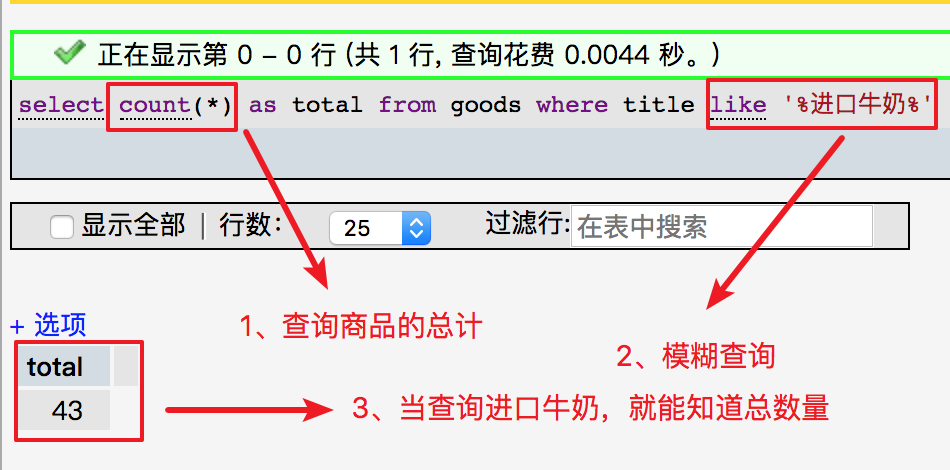
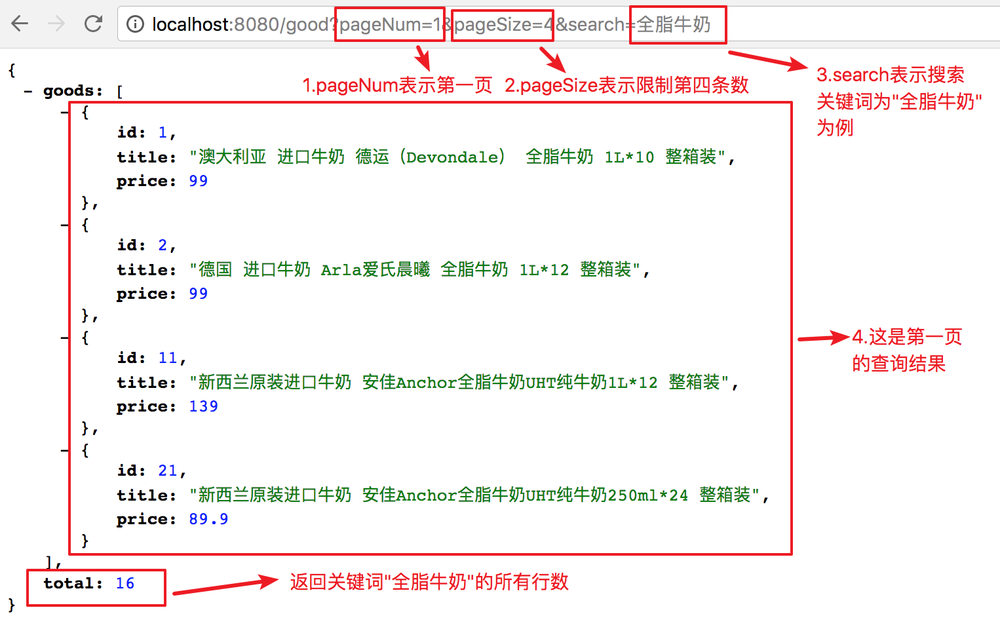
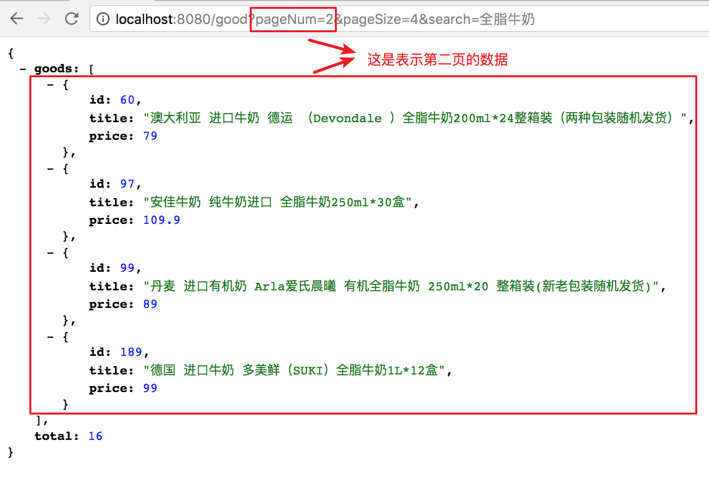

Node + MySQL实现模糊查询带分页
|从网上找不到关于模糊查询和分页在一起的文章，我只能研究模糊查询和分页。我希望本教程也许能帮到大家哈！但是我写的教程文章不能简单再简单了，因为适合新手或者入门来学习的。
在phpMyAdmin数据库管理工具操作模糊查询

我们开始创建一个简单的REST API的分页接口
// 引入重要的包
var express = require("express");
var mysql = require("mysql");
var bodyParser = require("body-parser");
var app = express();
你想要设置指定端口
// 设置指定端口
var port = process.env.PORT || 8080;
监听端口配置
app.listen(8080, function() {
console.log("✔ Express server listening on port " + port);
});
设置连接mysql配置
// 连接数据库
var connection = mysql.createConnection({
host: 'localhost',
user: 'root',
password: 'root',
database: 'mynode'
});
connection.connect();
// 使用body-parser解析请求体
app.use(bodyParser.urlencoded({ extended: false }));
app.use(bodyParser.json()); //解析JSON格式
在请求GET中，当我们查询商品名称，可以看到查询结果的总数量。
// 查询分页+模糊查询
app.get('/good', function(req, res) {
...
})
设置常量定义
var total; //总数量
var search = req.query.search; //查询
var param = req.query || req.params;
var pageNum = parseInt(param.pageNum || 1);// 页码
var end = parseInt(param.pageSize || 3); // 默认页数
var start = (pageNum - 1) * end; // 每页码
var limit = start + ',' + end; // 页码 + 限制条数
本例返回商品表中的行数：
// COUNT(*) 函数返回表中的记录数
connection.query("select count(*) as total from goods where title like '%" + search + "%'", function (err, results) {
if (!err) {
if (results[0]) {
total = results[0].total;
}
}
});
本例商品表中获取商品名称字段中
全脂牛奶为的所有记录
// 以下是我们将 goods 表中获取 title 字段中以 全脂牛奶 为结尾的的所有记录
connection.query("select * from goods where title like '%" + search + "%' LIMIT " + limit, function (err, results, fields) {
if (err) throw err;
res.json({
"goods": results,
"total": total
});
});
当我们查询关键词"全脂牛奶"为例，默认第一页的数据

当我们翻第二页的数据

完整项目
// 引入重要的包
var express = require("express");
var mysql = require("mysql");
var bodyParser = require("body-parser");
var app = express();
// 设置指定端口
var port = process.env.PORT || 8080;
// 连接数据库
var connection = mysql.createConnection({
host: 'localhost',
user: 'root',
password: 'root',
database: 'mynode'
});
connection.connect();
// 使用body-parser解析请求体
app.use(bodyParser.urlencoded({ extended: false }));
app.use(bodyParser.json()); //解析JSON格式
// 商品分页 + 模糊查询
app.get('/good', function(req, res) {
var total; // 总数量
var search = req.query.search; // 查询
var param = req.query || req.params;
var pageNum = parseInt(param.pageNum || 1); // 页码
var end = parseInt(param.pageSize || 3); // 默认页数
var start = (pageNum - 1) * end; // 每页码
var limit = start + ',' + end; // 表示第几页 + 限制第几条数
if(search) {
// COUNT(*) 函数返回表中的记录数
connection.query("select count(*) as total from goods where title like '%" + search + "%'", function (err, results) {
if (!err) {
if (results[0]) {
total = results[0].total;
}
}
});
// 以下是我们将 goods 表中获取 title 字段中以 全脂牛奶 为结尾的的所有记录
connection.query("select * from goods where title like '%" + search + "%' LIMIT " + limit, function (err, results, fields) {
if (err) throw err;
res.json({
"goods": results,
"total": total
});
});
}
});
// 监听端口
app.listen(8080, function() {
console.log("✔ Express server listening on port " + port);
});